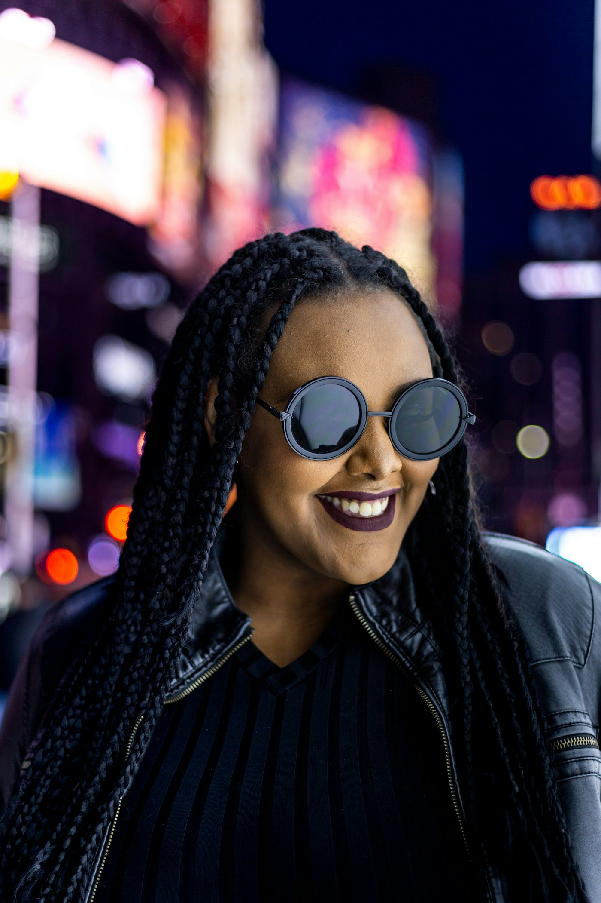
IA OU
REAL?
Assista aos dois vídeos. Escolha qual você acredita ser IA. Só então descubra a origem.
Preparando a experiência
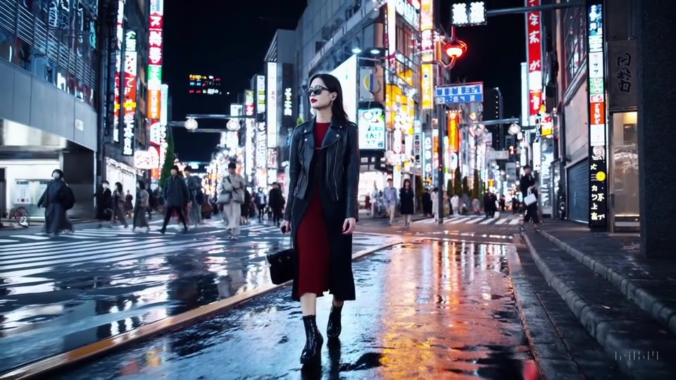
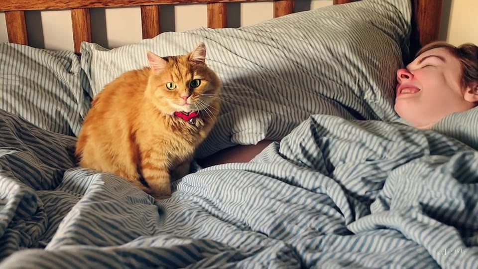
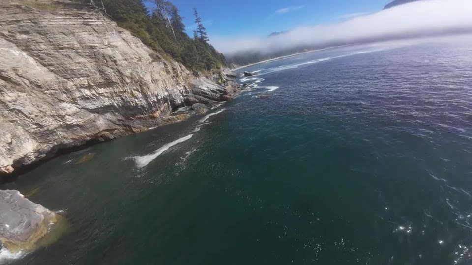
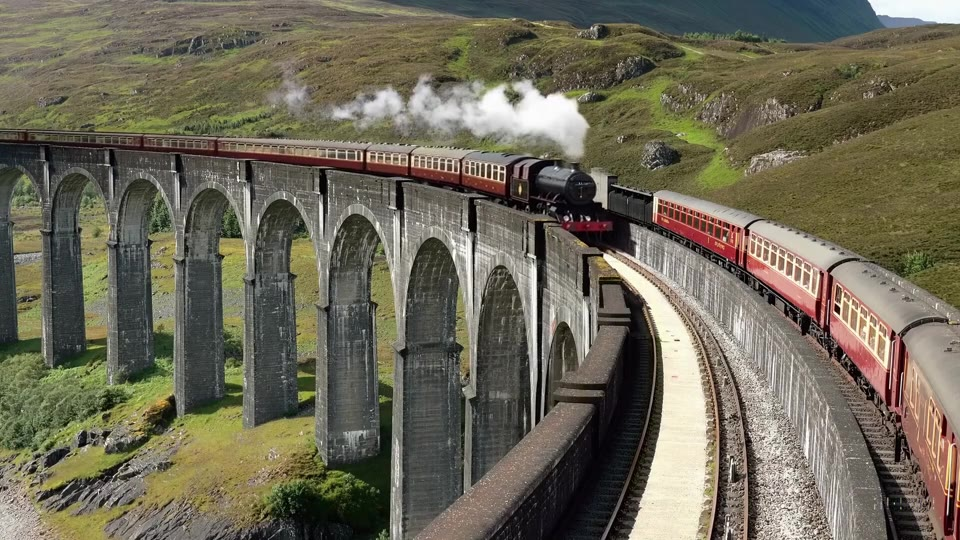
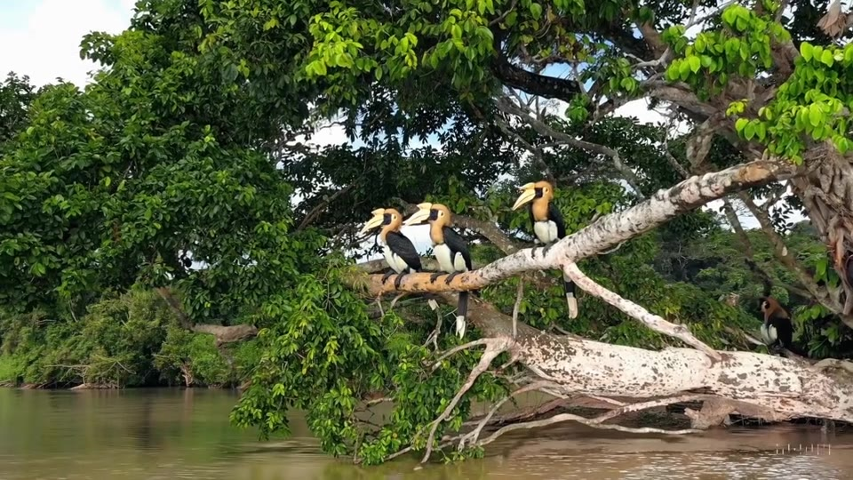
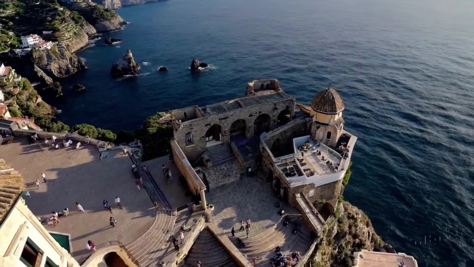

Assista aos dois vídeos. Escolha qual você acredita ser IA. Só então descubra a origem.
Uma falha visual é uma pista. Origem, contexto e fontes transformam o palpite em investigação.
Verificar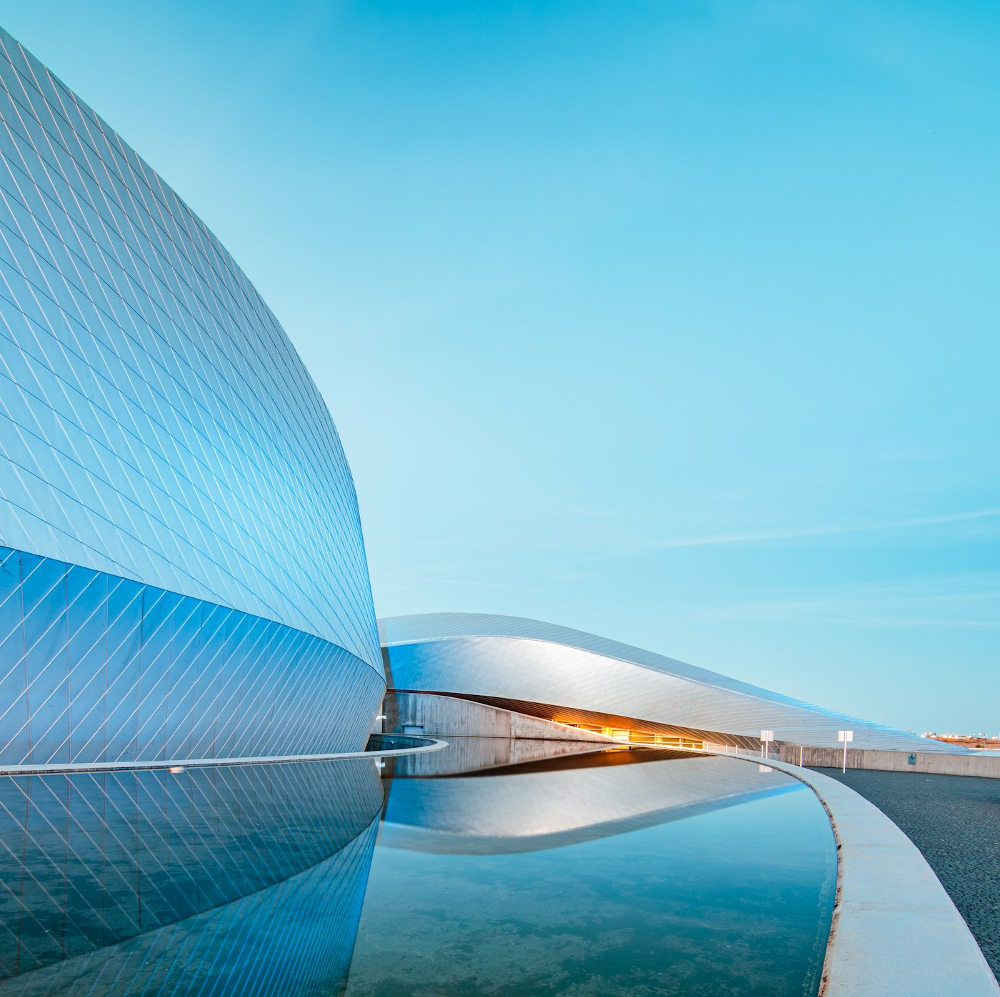
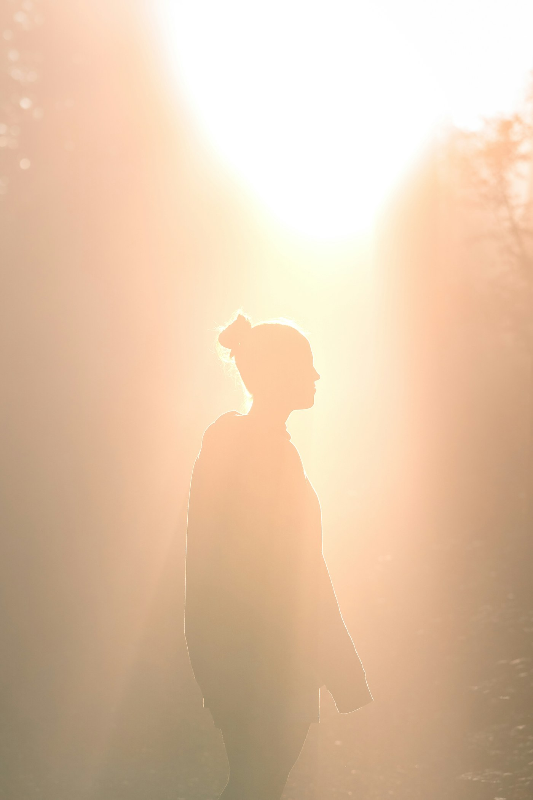
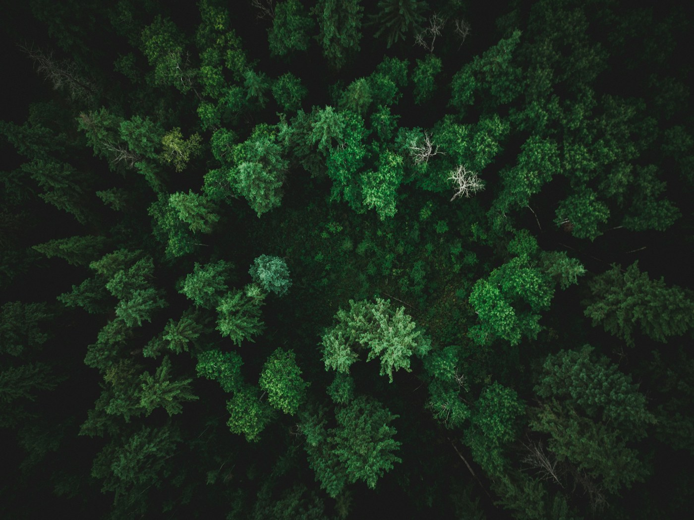
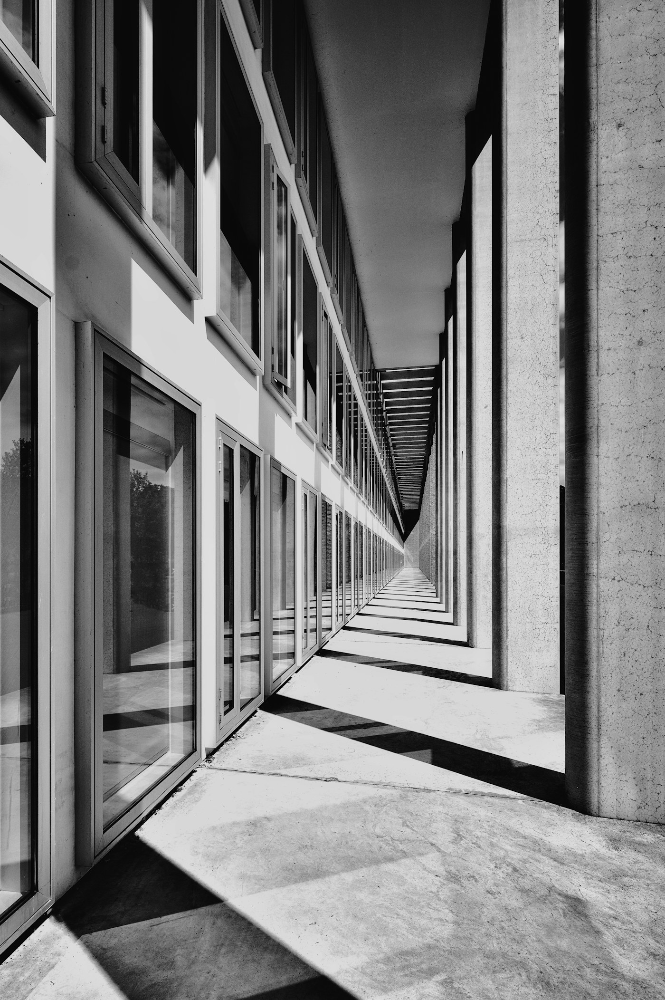
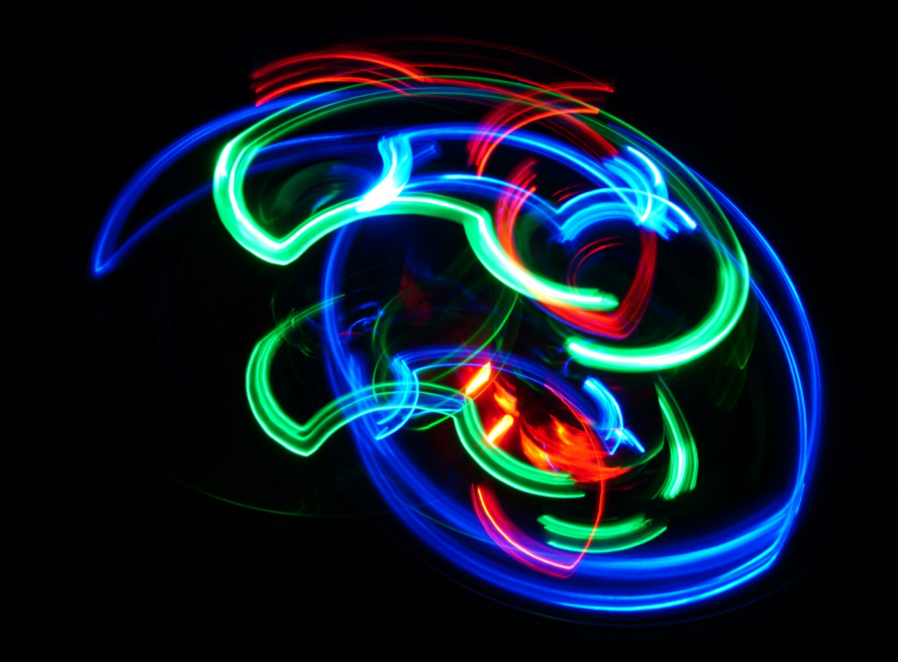
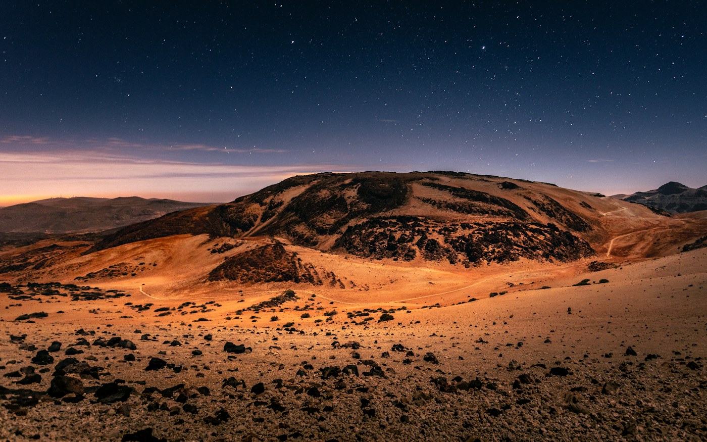
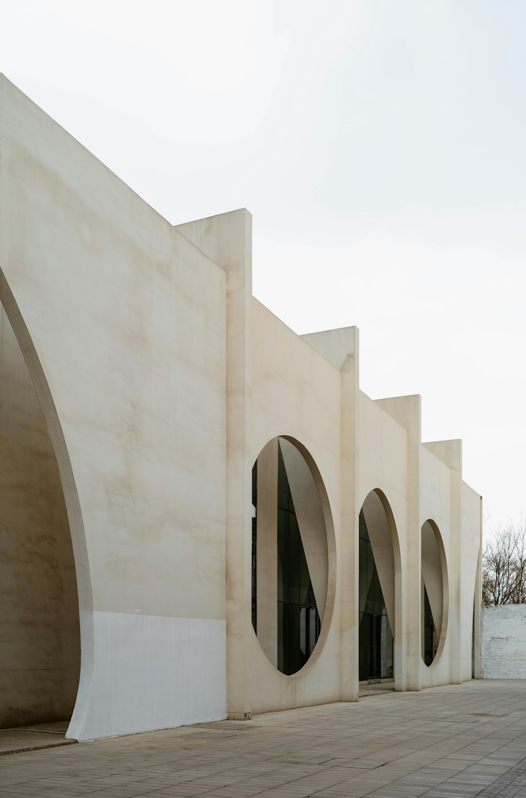
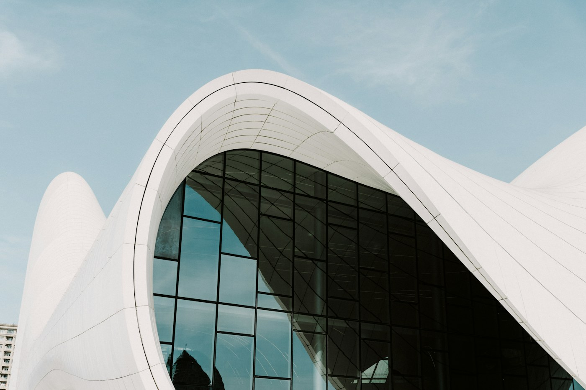
Um apresentador. Uma cidade futurista. Uma boa história pode parecer uma notícia. Que perguntas você faria antes de compartilhar?
Vídeo original do Grupo 3 · Criado com IA.
Baixar exemplo